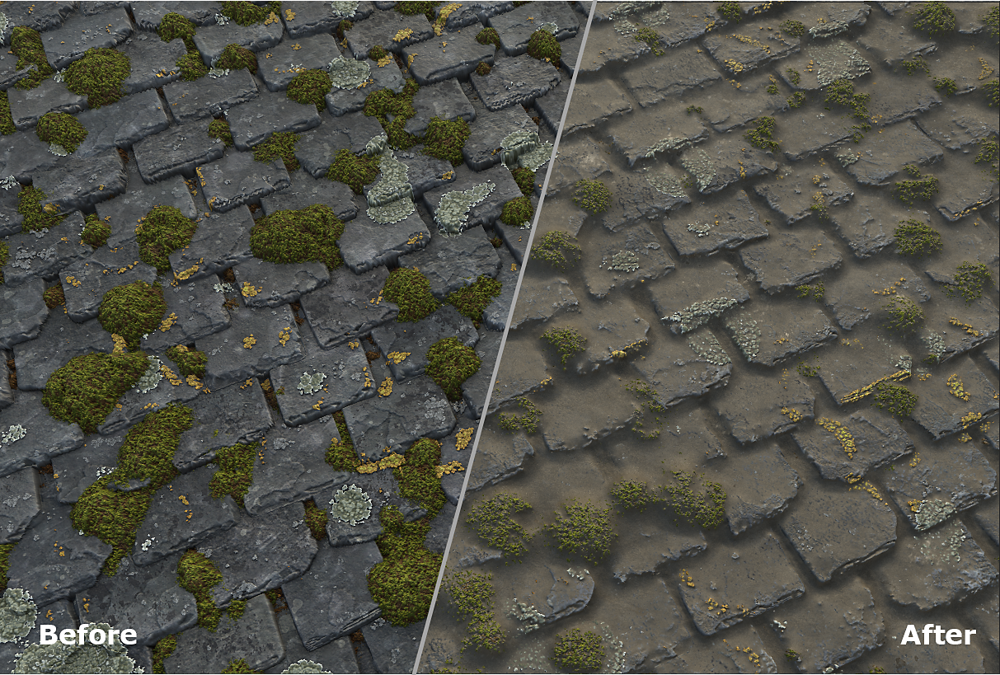
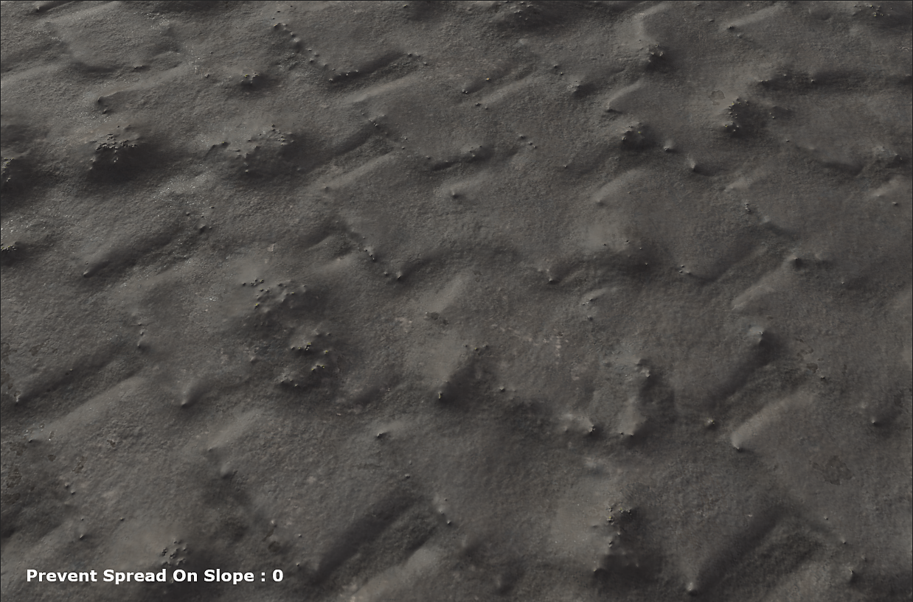
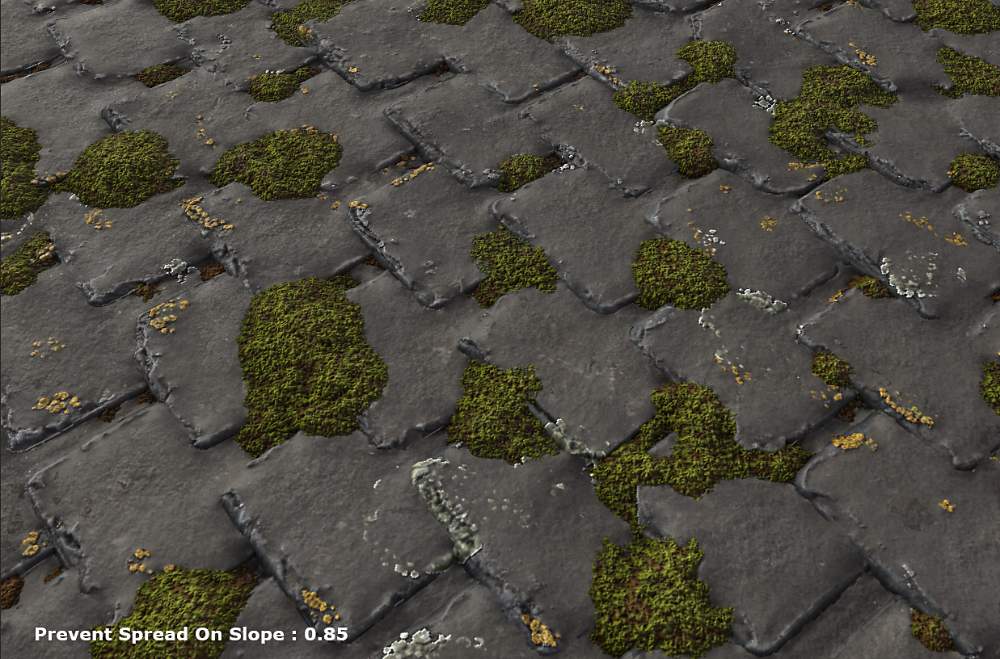

The Dust Splatter Layer is used to add dust to a material and define how the dust spreads.

The Dust Splatter can be added on top of a material. You can use it to smooth the cavities or make the different elements of a material work together.

